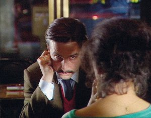

Grandeur et décadence d’un petit commerce
de cinéma
The Rise & Fall of a Small Film Company

Jean-Luc GodardFR 1986 / 2017 (restaured) Video auf HD – 92 min – French
German Premiere of rest. version
B+E: Jean-Luc Godard, after „The Soft Center“ by James Hadley Chase – DOP: Caroline Champetier,
Serge Le François, Pierre Bingelli
(Video) – S: François Musy, Pierre-Alain Besse – D: Capricci Films
With Jean-Pierre Léaud, Jean-Pierre
Mocky, Marie Valera, Nathalie Richard
The director
Gaspard Bazin is preparing a new feature film. For now,
he is still in the casting and financing stages. Jean Almereyda,
his
producer, has more and more difficulties to raise cash for his
company.
His wife, Eurydice, dreams of being a movie star. A perverse game
between the two men ensues, with Almereyda wanting to please his
wife, but reluctant to demand a role for Eurydice because of
Bazin’s
reputation as an incorrigible seducer.
opening thursday 5 oct 7.00 p.m. filmmuseum münchen
Jean-Luc Godard * in December 3, 1930, Paris, France, French film director who came to prominence with the New Wave group in France during the late 1950s and the ’60s.
Godard spent his formative years on the Swiss side of Lake Geneva, where his father directed a clinic. His higher education consisted of study for a degree in ethnology at the University of Paris, interminable student café conversations, and a labouring job on a dam, which inspired his first short film, Opération Béton (1954; Operation Concrete). His ethnological interests link with the influence on his work of Jean Rouch, an anthropologist who became the first practitioner and theoretician of the documentary-like film style cinéma vérité (“cinema truth”). Filmmakers of this school employ lightweight television equipment to observe their subject with the utmost informality and so completely without preconceived bias that the theme and motifs of the film emerge only while shooting or even later, at the editing stage.
Films Le Mépris 1963 – Week End 1967 – Soigne ta droite 1987 Histoire(s) du Cinéma 1989–1999 Film socialisme 2010 – 3x3D 2013 Adieu au langage 2014